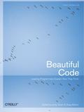
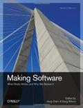
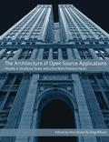
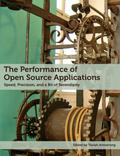

Close Enough for Scientific Work
The discussion around last month’s post “Why We Don’t Teach Testing (Even Though We’d Like To)” has been one of the most interesting in Software Carpentry’s history. Inspired by that, and by discussion at WSSSPE 2.0, we are launching a collaborative book project called Close Enough for Scientific Work in which scientists will show one another how they test their software.
Contributions should be aimed at sophomores in science and engineering, and each should be sized to fit a one-hour lecture. While the format of each entry will vary according to its content, we expect most will follow this template:
-
Introduce the problem.
-
Present a simple solution (100-200 lines of code).
-
Show how to test that code, explaining:
- what tests have been chosen,
- why they have been chosen, and
- how the author decided on the tolerances for those tests.
- (Optional) Add a feature, or extend the program in some other way, and show:
- how the tests are extended to handle the change, and
- how the testing pays off.
Authors will retain the copyright on their work, but all material must be made available under the Creative Commons - Attribution (CC-BY) license, and all software must be made available under the MIT License. You may use any (widely-used) format and programming language you like–we will employ a professional editor to handle copy editing and production. However, we ask that you don’t:
- explain unit testing, the difference between verification and validation, etc. (we’ll do that),
- explain how floating point works or that it’s hard (ditto), or
- use math that even your close colleagues would have to look up.
We have used this model to produce several previous books, including:
|  |  |  |  |
If you would like to contribute, please either submit a pull request to the repository mail Greg Wilson. And please help spread the word–we think that a couple of dozen worked examples will help most scientists more than any amount of preaching, and between us, we ought to be able to put them together.